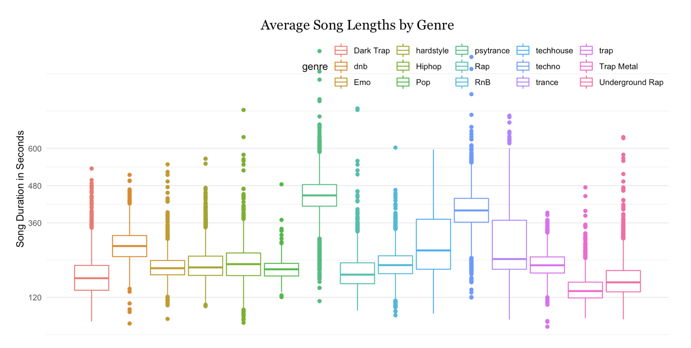

Data Visualization with R and ggplot
The dataset that I worked with contains about 40K entries of songs on Spotify, classified by 22 variables such as genre, length, and indexes that the Spotify API uses to assess songs, such as danceability and liveness.
Plot 1: It can be observed that Pop music has a relatively small distribution of song length with them hovering around 3-4 minutes. On the contrary, Psytrance had the largest variance with an extremely long outlier.
{r}
library(tidyverse)
library(readr)
library(cowplot)
require(dplyr)
library(treemapify)
genres <- read_csv("data/genres_v2.csv")
#| fig-width: 10
#| fig-height: 5
ggplot(genres, aes(y = duration_ms, color = genre)) +
geom_boxplot(width = .2) +
scale_x_continuous(
NULL,
breaks = NULL
) +
scale_y_continuous(
"Song Duration in Seconds",
breaks = c(120000, 2400000, 360000, 480000, 600000),
labels = c(120, 240, 360, 480, 600)
) +
theme_minimal() +
theme(
legend.position = c(1, 1)
, legend.justification = c(1, 1),
legend.direction = "horizontal",
plot.title = element_text(family = "Georgia", color = 'black', hjust = 0.5
, size = 15
)
) +
ggtitle("Average Song Lengths by Genre")

Plot 2: I chose to visualize the relative count of the genres in the dataset using a treemap instead of a more conventional option such as a piechart because not only are piecharts generally not the best option of communicating data, but the area - count mapping of the treemap was very intuitive and clear.
{r}
genre_counts <- genres %>%
group_by(genre) %>%
summarize(
count = n()
)
ggplot(genre_counts, aes(area = count, fill = genre, label = genre)) +
geom_treemap(alpha = .8) +
geom_treemap_text(
place = 'center',
size = '12',
family = 'Courier'
)+
geom_treemap_text(
aes(label = count),
color = 'white',
size = '8' ) +
theme_minimal() +
ggtitle('Distribution of Song Genres on Spotify')+
theme(plot.title = element_text(family = "Georgia", color = 'black', hjust = 0.5, size = 15))
I chose the Courier font to match the Spotify Receipt-style theme.
Plot3 : This series of graphs all have tempo on the x-axis, revealing correlations between tempo and loudness, danceability, speechiness, and energy
{r}
#| fig-height: 5
#| fig-width: 7
tempoEnergy <- ggplot(genres, aes(tempo, energy,)) +
geom_hex()
tempoDance <- ggplot(genres, aes(tempo, danceability,)) +
geom_hex()
tempoLoud <- ggplot(genres, aes(tempo, loudness,)) +
geom_hex()
tempoSpeech <- ggplot(genres, aes(tempo, speechiness,)) +
geom_hex()
title <- ggdraw() +
draw_label(
"Tempo vs. Energy, Loudness, Danceability, and Speechiness"
, fontface = 'bold'
, fontfamily = "Georgia"
, x = .5
, hjust = .5
, size = 14
) +
theme(
plot.margin = margin(5, 5, 5, 5)
)
plot_grid(title,plot_grid(tempoEnergy, tempoDance, tempoLoud, tempoSpeech, nrow = 2) , ncol = 1 , rel_heights = c(.1, 1.5))